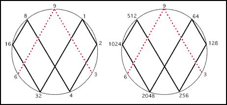
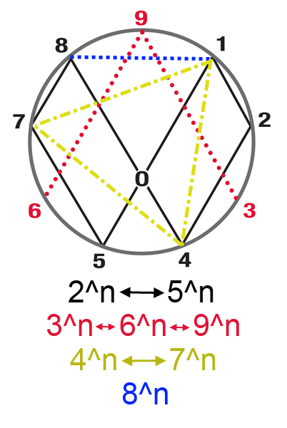

Programmed by Casey Rodgers
The Rodin algorithmic sequences are an algorithm of two simple steps
1. Calculate the sequence of any formula with any integer with a sequnce of integers n
starting with zero i.e. n = 0,1,2,3,4,5,6,...:
Example The sequence for integer 2^n is: 1,2,4,8,16,32,64,128.....
2. Add the digits of the number calculated if it is greater than 9 until the answer is lesser
than 9. For example 2^6 = 64 -> 6+4=10>9 -> 1+0 = 1. So 1 is the Rodin algorithmic sequence number.
The Rodin algorithmic sequnce for 2^n is: 1,2,4,8,7,5,1,2,4,8,7,5,.....
This is what you should get in the sequence output area called "Rodin algorithmic sequence".
When the number input is 2 which will be 2^n calculated.
A visual to help see how this works is below:

This website will help people understand how Marko Rodin's algorithmic
sequences work because it is an interactive javascript program. When you hit
the Start sequence button you will see numbers displayed in all the text boxes and
in the area bellow the line. In the first text box enter the formula you wish to calculate.
The second textbox called "Rodin algorithmic sequence" displays
each number in the sequence N^n.The third textbox called "Adding steps"
displays the addition of the numbers until there is only one step. each step is seperated
by commas. The fourth textbox called "Rodin algorithmic sequence" displays the Rodin algorithmic
sequence number that is calculated in the third textbox.
The doubling sequence and Rodin sequence are displayed bellow the text boxes.
To enter a formula use any expression for math that will work like "*" for
multiplication "+" for addition. Enter the lowercase letter n to represent a sequence of numbers
n = 0,1,2,3,4,5,6,..., which is what you get if you only put n there. The expression "-" for subraction,
and "/" for divide will calculate but the program will only any number but the negative sign
will give inaacurate results. So the formula must give a positive number answer to work.
The expression Math.pow(2,n) is the same as 2 to the nth power (i.e. 2^n) 2^n will not work so use
this javascript function. I changed the alogrithm so that if there is a fraction or a number with a decimal
point "." the number will be changed into a fraction and the Rodin algorithm will be calculated for the
numerator and demoninator. So for example 21/64 would be 2+1/6+4 = 3/10 then 3/1+0 = 3/1.
Input a formula you wish to examine:
Formula sequence:
Adding steps:
Rodin algorithmic sequence:
Rodin algorithmic sequence:
Rodin sequence:
It is interesting to note that the formula 2^n math calculations in javascript only
work up to 2^53 which is exactly 9007199254740992.
This means that the Rodin sequence
is no longer accurate after repeating 9 times.
It seems like there are many combinations of formulas involving numbers and n which will
give repeating sequnce patterns. I wonder what kind of formulas give reapeating patterns and which ones don't. Give me
feedback on what you find and what you think of the app. I would like to know!
The other interesting fact to note is that if you put any N^n formula, where N is
an integer you will find that they repeat. Here are the Rodin algorithmic sequences which will repeat:
1^n = 1, 1, 1, 1, 1, 1, 1, 1, 1, 1, 1, 1,...
2^n = 1, 2, 4, 8, 7, 5, 1, 2, 4, 8, 7, 5,...
3^n = 1, 3, 9, 9, 9, 9, 9, 9, 9, 9, 9, 9,...
4^n = 1, 4, 7, 1, 4, 7, 1, 4, 7, 1, 4, 7,...
5^n = 1, 5, 7, 8, 4, 2, 1, 5, 7, 8, 4, 2,...
6^n = 1, 6, 9, 9, 9, 9, 9, 9, 9, 9, 9, 9,...
7^n = 1, 7, 4, 1, 7, 4, 1, 7, 4, 1, 7, 4,...
8^n = 1, 8, 1, 8, 1, 8, 1, 8, 1, 8, 1, 8,...
9^n = 1, 9, 9, 9, 9, 9, 9, 9, 9, 9, 9, 9,...
Then since 10^n starts with 10 which woulbe be 1+0 = 1, the sequences repeat.
Thus the general rule is if you add the numbers together and keep adding the results till you
get a single digit number you will always end up with a Rodin sequence. e.g. 25^n is 2+5 = 7
so the sequence is the same as 7^n.

The symbol above shows the relationships of the rodin sequences the sequences
2^n and 5^n are the opposite of eachother and same with the sequence 4^n and 7^n. the sequences 3^n, 6^n
and 9^n all go to a repeating 9 after the 3rd number in the sequence. 8^n is its own thing what can I say :).